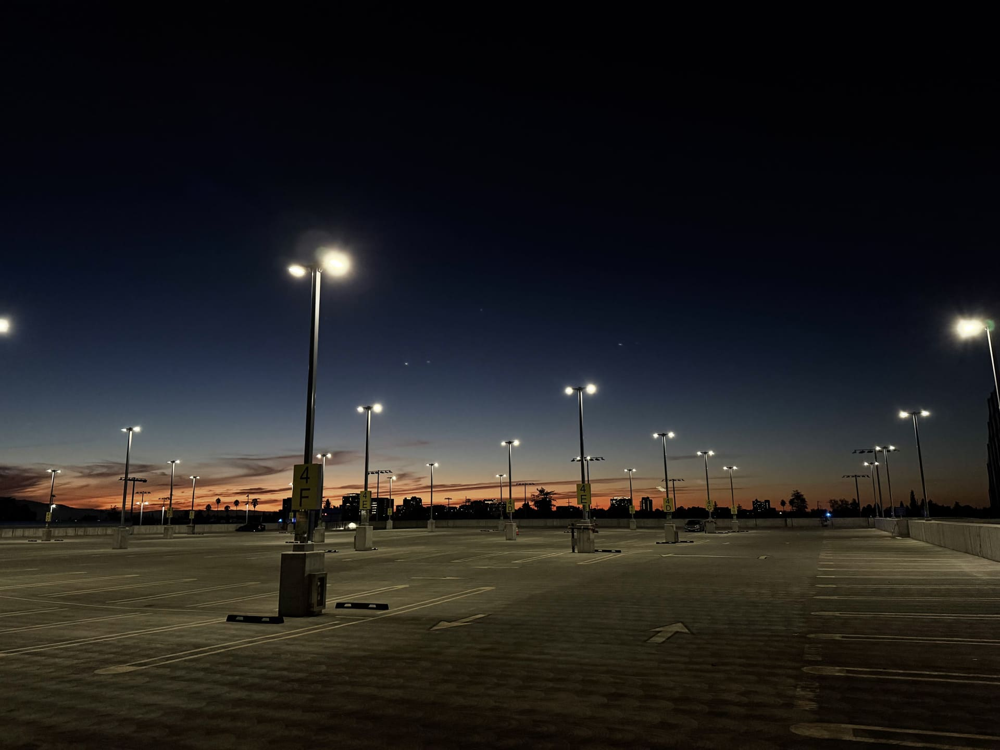

We wanted to document our lives through scenery photography with this project. For two dedicated weeks, we each took a photo a day, from August 25 to September 7. The other 28 photos are from random points in time, taken before the introduction of this project. We took a sousveillance approach to our project, so viewers can get a glimpse of our lives through our eyes.
While these photos taken by the two of us are unrelated, they show different aspects of our lives. We want to bring attention to the innocent photos we take, a photo of food, of pretty artwork, of a beautiful sunset, and how they can be used to tell a story. However, these images contain metadata and can be used to track our movements and our lives. We included the times the photos were taken, intentionally to make the audience notice patterns and trends in our lifestyles. We want to bring attention to the fact that these photos can be used to surveil us, and we want to show how we can use these photos to sousveil ourselves.
